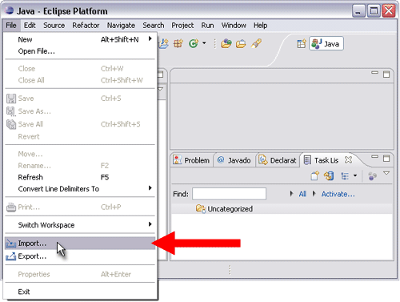
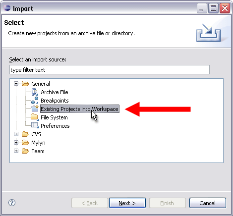
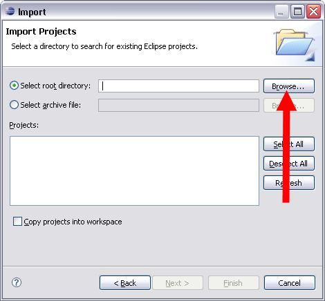
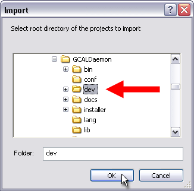
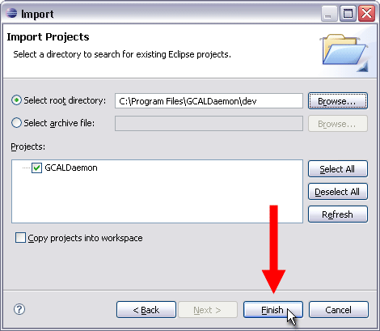
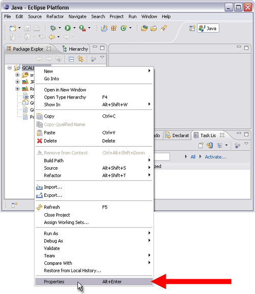
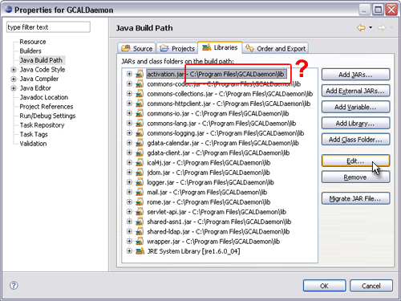
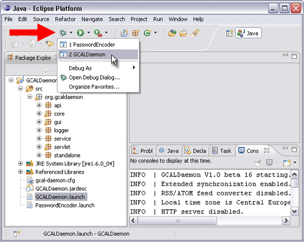
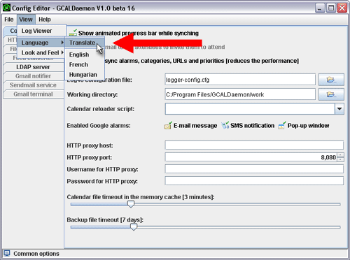
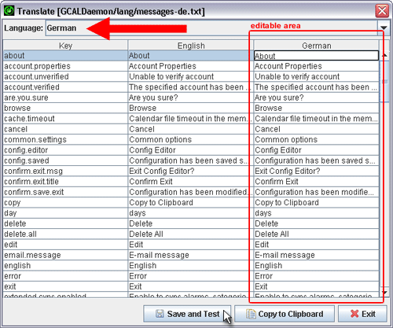

|
The SyncEngine API lets you embed GCALDaemon in your application.
To use the API, you need to first download the latest GCALDaemon ZIP distribution from
.
Once you've installed GCALDaemon, you can develop a calendar synchronizer following the instructions in this documentation.
This documentation is designed for people familiar with Java
programming and Eclipse development platform.
package com.mycompany.samples;
import org.gcaldaemon.api.SyncEngine
import java.io.File;
import java.net.URL;
public class SimplestSync {
public static void main(String[] args) {
try {
// This directory is used by the SyncEngine
// for temporary file storage
File workDir = new File("/foo/sync");
// Path to local iCalendar file
File localCalendar = new File("/foo/calendar.ics");
// Private iCal URL of a Google Calendar
// Use the SyncEngine.listCalendars() method to get URLs
URL remoteCalendar = new URL(
"https://www.google.com/calendar/.../basic.ics");
// Gmail user
String username = "username@gmail.com";
// Gmail password
String password = "secret123";
// Creates a synchronizer engine
SyncEngine engine = new SyncEngine(workDir);
// Do the synchronization
engine.synchronize(localCalendar,
remoteCalendar,
username,
password);
} catch (Exception e) {
e.printStackTrace();
}
}
}
Before running the examples in this guide,
you'll need to make sure that your classpath includes all necessary JAR files.
Core libraries (required for SyncEngine):
- gcal-daemon.jar
- gdata-client.jar
- gdata-calendar.jar
- commons-httpclient.jar
- commons-logging.jar
- commons-codec.jar
- commons-lang.jar
- activation.jar
- logger.jar
- ical4j.jar
- mail.jar
Optional libraries (required for RSS/ATOM converter):
- commons-collections.jar
- commons-io.jar
- jdom.jar
- rome.jar
1) Launch ,
then click on the "File/Import..." menu item.

2) Select "Existing Projects into Workspace" option.

3) In this step of import you should choose the root folder of the project.
Click on the "Browse" button by the "Select root directory" field.

4) Select the <GCALDaemon install directory>"/GCALDaemon/dev" folder as root.

5) Click on "Finish" button to finish the import procedure.

6) In this step, you simply make sure that the all paths are correct in the project descriptor.
Select the imported project, right-click it with the mouse, then select "Properties".

7) Select the "Libraries" tab, then you should verify that the libraries are linked
to the appropriate JAR files in the project descriptor.
If a path isn't correct, browse to where the JAR is located on your computer
using the "Edit" button. The "Compiler compliance level" should be "1.4".

8) After the verification, you can launch a debug session for GCALDaemon, directly from the Eclipse.
Click on the "Debug" icon, then select the GCALDaemon's configuration.

GCALDaemon logging and tracing is based on the Logging component of the Jakarta Commons project,
or the
Jakarta Commons Logging
(JCL) SPI. The JCL provides a Log interface with thin-wrapper
implementations for other logging tools, including Log4J, Avalon LogKit, and JDK 1.4.
By using Commons Logging, SyncEngine (JCL) SPI can be
configured for a variety of different logging behaviours. That means the
developer will have to make a choice which logging framework to use. To
specify a specific logger be used, set this system property:
org.apache.commons.logging.Log
to one of:
- org.apache.commons.logging.impl.SimpleLog
- org.apache.commons.logging.impl.AvalonLogger
- org.apache.commons.logging.impl.Jdk13LumberjackLogger
- org.apache.commons.logging.impl.Jdk14Logger
- org.apache.commons.logging.impl.Log4JLogger
- org.apache.commons.logging.impl.LogKitLogger
- org.apache.commons.logging.impl.NoOpLog
- org.gcaldaemon.logger.DefaultLog
By default, the SyncEngine will use the DefaultLog framework. DefaultLog is a
simple implementation of the Log interface that sends all log messages to
"System.out". Configuration example:
System.setProperty("org.apache.commons.logging.Log",
"org.apache.commons.logging.impl.Jdk14Logger");
The minimum requirement to integrate with another logger is to provide
an implementation of the org.apache.commons.logging.Log interface.
To use the Commons Logging from your Java class, include the following import statements:
import org.apache.commons.logging.Log;
import org.apache.commons.logging.LogFactory;
Then you can declare and initialize a logger as follows:
public class MyClass {
private Log log = LogFactory.getLog(MyClass.class);
...
}
To synchronize a non-ical-compatible calendar to Google Calendar, you have to convert it to iCalendar.
The conversion is easy if you use "ical4j" API.
The algorithm of the basic event converter can be expressed in the following pseudocode
(PDAConnection and PDAEvent are non-existing objects):
package com.mycompany.samples;
import org.gcaldaemon.api.SyncEngine
import java.io.*;
import java.net.*;
import java.util.*;
import net.fortuna.ical4j.data.*;
import net.fortuna.ical4j.model.*;
import net.fortuna.ical4j.model.component.*;
import net.fortuna.ical4j.model.property.*;
public class PDASynchronizer {
public static void main(String[] args) {
try {
// Engine's working directory
File workDir = new File("/foo/sync");
// Private iCal URL of a Google Calendar
URL remoteCalendar = new URL(
"https://www.google.com/calendar/.../basic.ics");
// Gmail user
String username = "username@gmail.com";
// Gmail password
String password = "secret123";
// Create a synchronizer engine
SyncEngine engine = new SyncEngine(workDir);
// Connect to PDA
PDAConnection pda = PDAConnection.connect("COM3");
// Download and convert PDA's events
byte[] oldLocalCalendar = loadFromPDA(pda);
// Synchronization
byte[] newLocalCalendar = engine.synchronize(oldLocalCalendar,
remoteCalendar,
username,
password);
// Pushback events into the PDA
saveToPDA(pda, newLocalCalendar);
} catch (Exception e) {
e.printStackTrace();
}
}
private static byte[] loadFromPDA(PDAConnection pda) throws Exception {
// Download all events from PDA
PDAEvent[] pdaEvents = pda.getAllEvents();
// Create a new, empty iCalendar object
Calendar iCalendar = new Calendar();
PropertyList props = iCalendar.getProperties();
props.add(Version.VERSION_2_0);
props.add(CalScale.GREGORIAN);
// Convert PDAEvents to iCalendar events
for (int index = 0; index < pdaEvents.length; index++) {
PDAEvent pdaEvent = pdaEvents[index];
// Convert properties
DateTime startTime = pdaEvent.getStartTime();
DateTime endTime = pdaEvent.getEndTime();
String summary = pdaEvent.getSummary();
...
// Add converted event to iCalendar
VEvent icalEvent = new VEvent(startTime, endTime, summary);
iCalendar.getComponents().add(icalEvent);
}
// Convert iCalendar to byte array
ByteArrayOutputStream buffer = new ByteArrayOutputStream();
CalendarOutputter outputter = new CalendarOutputter();
outputter.output(iCalendar, buffer);
return buffer.toByteArray();
}
private static final void saveToPDA(PDAConnection pda, byte[] icalBytes)
throws Exception {
// Parse bytes to iCalendar
CalendarBuilder builder = new CalendarBuilder();
Calendar iCalendar = builder.build(new ByteArrayInputStream(icalBytes));
// Remove all events from PDA
pda.removeAllEvents();
// Convert iCalendar events to PDAEvents
ComponentList eventList = iCalendar.getComponents(Component.VEVENT);
for (int index = 0; index < eventList.size(); index++) {
VEvent icalEvent = (VEvent) eventList.get(index);
// Convert properties
PDAEvent pdaEvent = new PDAEvent();
pdaEvent.setStartDate(icalEvent.getStartDate());
pdaEvent.setEndDate(icalEvent.getEndDate());
pdaEvent.setSummary(icalEvent.getSummary());
...
// Store the converted event
pda.addEvent(pdaEvent);
}
}
}
SyncEngine - like GCALDaemon - can convert RSS/ATOM XML files to iCalendar format:
// Engine's working directory
File workDir = new File("/foo/sync");
// Link to RSS feed
URL feedURL = new URL("http://newsrss.bbc.co.uk/rss/"
+ "newsonline_uk_edition/sci/tech/rss.xml");
// Create a synchronizer engine
SyncEngine engine = new SyncEngine(workDir);
// Convert feed to iCalendar
byte[] iCalendar = engine.loadCalendar(feedURL);
See the JavaDoc for the SyncEngine class for more information.
All labels and messages displayed by the Config Editor come from property files.
A separate property file is provided for each supported language.
These are text files in the "GCALDaemon/lang" directory that you can edit with the Config Editor.
1) Launch ,
then click on the "View/Language/Translate" menu item.

2) Select a non-english language, and translate all messages in the third column.

3) If you finished the translation, click on "Copy to Clipboard" button,
then please send the property file to "aberkes_AT_users.sourceforge.net".
If you have any questions, feature requests or comments about the SyncEngine API move on to
and share your ideas with us. Thank you!
|